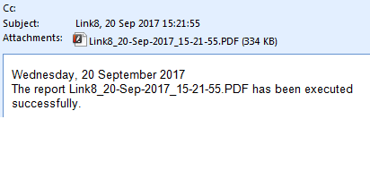

Generating and Emailing Fixed Link Reports
You can generate and email an external web application fixed link report:
- Manually, from the Operation tab. The Application Name property lets you set the parameters to execute the external web application fixed link report.
- Automatically, as the output of a reaction. You can then schedule a download or email of a Web Application Fixed Link report. You will set an external web application fixed link as the target object of the output of a reaction and specify any Time & Organization Mode conditions that will trigger the report execution.
- When a specific script is started.
Before an external Web Application Fixed Link report can be executed (automatically or manually), you must set the user credentials for that fixed link.
After the report is executed, the corresponding file (PDF, XLSX, or DOCX) can be downloaded and saved in the specified directory on the local client machine. Also, if configured, an email can be sent immediately or at a scheduled time to a list of established recipients.
Default Email without Email Subject and Body
Below is a sample of an email using the default settings. Otherwise, a subject and text can be added to the body of the email.
